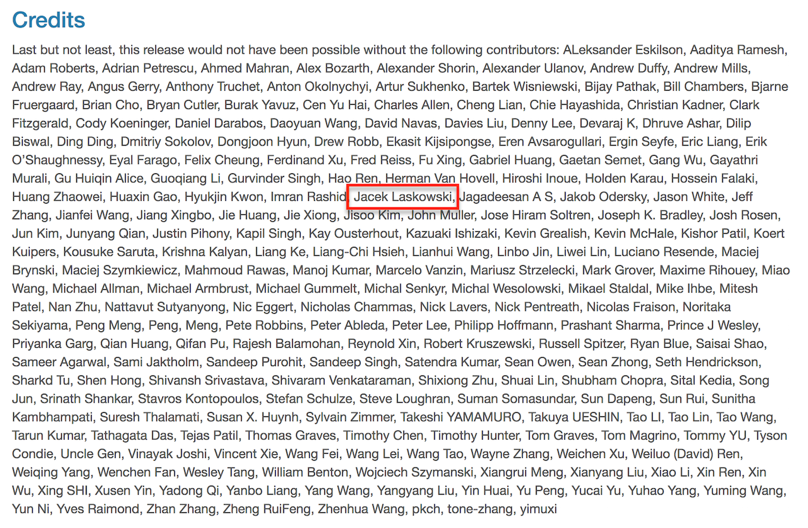

Spark 2 / Scala Workshop 4 Days
@jaceklaskowski / StackOverflow / GitHub / Mastering Apache Spark 2
- Jacek Laskowski is an independent consultant
- Specializing in Spark, Kafka, Mesos, DC/OS, Scala
- Among contributors to Spark 2.1, Spark 2.0 (since 1.6.0)
- Contact me at jacek@japila.pl or follow me on twitter at @JacekLaskowski <-- and learn more Spark!
- Delivering Development Services | Consulting | Training
- Leader of Warsaw Scala Enthusiasts and Warsaw Apache Spark
- Java Champion
https://github.com/jaceklaskowski

https://bit.ly/mastering-apache-spark

Among contributors to Apache Spark 1.6

Among contributors to Apache Spark 2

Among contributors to Apache Spark 2.1

Ranked #96 in Spark contributors

http://stackoverflow.com/users/1305344/jacek-laskowski

https://twitter.com/jaceklaskowski

Goal
Creating prototypes in Databricks Cloud, and switch to developing full-blown Scala applications managed by sbt
Agenda
- Scala Crash Course
- val, def, case class, class, object, functions
- Initializing, setting options, start/stop SparkContext
- Creating SparkSession
- From DataFrames to RDDs
- Transforming RDDs
- Commonly-used APIs and lots of practical examples
- Creating DataFrames from RDDs
- Caching and Persistence
- Manipulating DataFrames
- Developing Scala applications using sbt
- Spark Tools - spark-shell, spark-submit and web UI
Prerequisities (1 of 3)
- Some programming experience using modern programming language, e.g. Scala, Python, Java, F#
Prerequisities (2 of 3)
- Databricks Cloud Community Edition account
- Installed
- Java Platform, Standard Edition (Java SE) 8
- IntelliJ IDEA Community Edition with Scala plugin
- sbt
- PostgreSQL
- Apache Kafka
- Apache Hadoop 2.7.3 (not
Hadoop 3.0.0-alpha2)
Prerequisities (3 of 3)
- Downloaded
Questions?
- Read Mastering Apache Spark 2
- Follow @jaceklaskowski on twitter
- Upvote my activities on StackOverflow
- Use Jacek's code at GitHub
- Read Jacek Laskowski @ Medium
- Visit Jacek Laskowski's blog